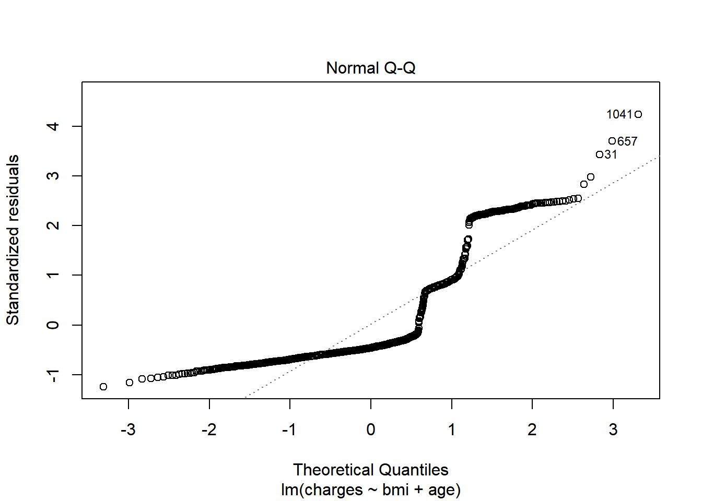
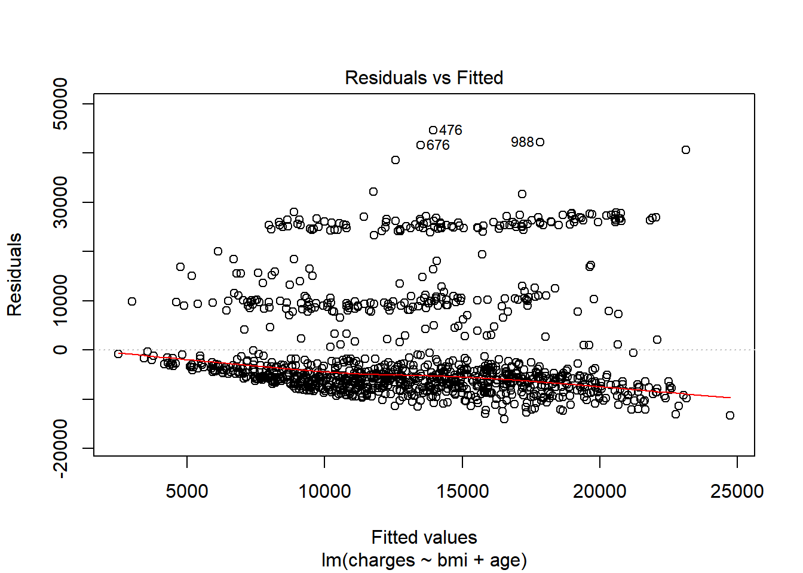

7 Data exploration
Exploration is about making discoveries. You’ll need a strong sense of curiosity coupled with technical skill if you want to be able to make sense of the data. This chapter will give you the tools to take dirty, unprocessed data and clean it up, discover interesting trends using graphs and summary statistics, and communicate your results to a business audience.
About 10 - 15% of your grade will be based on data exploration. Every version of Exam PA such as December 2018, June 2019, and December 2019 have all had questions about data exploration. Putting in extra practice in this area is garanteed to give you a better score because it will free up time that you can use elsewhere.
Exploratory Data Analysis (EDA) is usually the first phase of an analytics project. This is as much of an art as it is a science because everyone has their own style. If you ask two actuaries perform EDA on the same data set, they will likely use different methods. These can be broken down into phases.
Figure 7.1: Data Exploration Phases - From R for Data Science
From the language on the December 2020 Syllabus, these are
Import:
- Evaluate the quality of appropriate data sources for a problem.
- Identify the regulations, standards, and ethics surrounding predictive modeling and data
Tidy:
- Identify structured, unstructured, and semi-structured data.
- Identify the types of variables and terminology used in predictive modeling.
- Understand basic methods of handling missing data.
- Implement effective data design with respect to time frame, sampling, and granularity.
Transform:
- Identify opportunities to create features from the basic data that may add value.
- Identify outliers and other data issues.
- Handle non-linear relationships via transformations.
Visualize:
- Apply univariate and bivariate data exploration techniques.
- Understand the key principles of constructing graphs.
- Create a variety of graphs using the ggplot2 package.
Model:
- Fit and interpret models
Communicate:
- Write the report
7.1 How to make graphs in R
Let’s create a histogram of the claims. The first step is to create a blank canvas that holds the columns that are needed. The library to make this is called ggplot2.
The aesthetic argument, aes, means that the variable shown will the the claims.
If we look at p, we see that it is nothing but white space with axis for count and income.

7.1.1 Add a plot
We add a histogram

Different plots are called “geoms” for “geometric objects”. Geometry = Geo (space) + meter (measure), and graphs measure data. For instance, instead of creating a histogram, we can draw a gamma distribution with stat_density.

Create an xy plot by adding and x and a y argument to aesthetic.

7.1.2 Data manipulation chaining
Pipes allow for data manipulations to be chained with visualizations.
termlife %>%
filter(FACE > 0) %>%
mutate(INCOME_AGE_RATIO = INCOME/AGE) %>%
ggplot(aes(INCOME_AGE_RATIO, FACE)) +
geom_point() +
theme_bw()
7.2 The different graph types
Only four types of graphs are used for data exploration. You will only need to understand how to interpret them. The SOA will provide you with code needed to create them. There will not be enough time for you to make your own graphs.
7.2.1 Histogram
The histogram is used when you want to look at the probability distribution of a continuous variable.
The template code in your Rmd file will look like this. Just change “variable” to the name without quotes of the variable and then copy and paste.
7.2.2 Box plot
The boxplot compactly displays the distribution of a continuous variable. It visualises five summary statistics (the median, two hinges and two whiskers), and all “outlying” points individually.
7.2.3 Scatterplot
The point geom is used to create scatterplots. The scatterplot is most useful for displaying the relationship between two continuous variables. It can be used to compare one continuous and one categorical variable, or two categorical variables.
7.2.4 Bar charts
There are two types of bar charts: geom_bar() (Univariate) and geom_col() (Bivatiate). geom_bar() makes the height of the bar proportional to the number of cases in each group (or if the weight aesthetic is supplied, the sum of the weights). If you want the heights of the bars to represent values in the data, use geom_col() instead. geom_bar() uses stat_count() by default: it counts the number of cases at each x position.
7.3 How to save time with dplyr
You may have noticed that writing code for data manipulation can be slow. Fortunately, there is a faster, 100%-legal, way of doing data manipulation that has worked for hundreds of exam candidates (the author included) who have taken Exam PA.
Up to this point we have been using old R libraries. By making use of newer R libraries we can save ourselves time. These will all be provided for you at Prometric within the tidyverse library.
Suggested reading of R for Data Science (https://r4ds.had.co.nz/index.html):
| Chapter | Topic |
|---|---|
| 9 | Introduction |
| 10 | Tibbles |
| 12 | Tidy data |
| 15 | Factors |
| 17 | Introduction |
| 18 | Pipes |
| 19 | Functions |
| 20 | Vectors |
7.4 How to explore the data
Let’s look at the health insurance data set. This contains information on patients along with their annual health care costs.
The descriptions of the columns are below.
age: Age of the individualsex: Sexbmi: Body Mass Indexchildren: Number of childrensmoker: Is this person a smoker?region: Regioncharges: Annual health care costs.
head() shows the top n rows. head(20) shows the top 20 rows.
## # A tibble: 6 x 7
## age sex bmi children smoker region charges
## <dbl> <chr> <dbl> <dbl> <chr> <chr> <dbl>
## 1 19 female 27.9 0 yes southwest 16885.
## 2 18 male 33.8 1 no southeast 1726.
## 3 28 male 33 3 no southeast 4449.
## 4 33 male 22.7 0 no northwest 21984.
## 5 32 male 28.9 0 no northwest 3867.
## 6 31 female 25.7 0 no southeast 3757.Using a pipe is an alternative way of doing this.
Shortcut: Use CTRL + SHFT + M to create pipes %>%
The glimpse function is similar to str().
## Observations: 1,338
## Variables: 7
## $ age <dbl> 19, 18, 28, 33, 32, 31, 46, 37, 37, 60, 25, 62, 23, 56, 27...
## $ sex <chr> "female", "male", "male", "male", "male", "female", "femal...
## $ bmi <dbl> 27.900, 33.770, 33.000, 22.705, 28.880, 25.740, 33.440, 27...
## $ children <dbl> 0, 1, 3, 0, 0, 0, 1, 3, 2, 0, 0, 0, 0, 0, 0, 1, 1, 0, 0, 0...
## $ smoker <chr> "yes", "no", "no", "no", "no", "no", "no", "no", "no", "no...
## $ region <chr> "southwest", "southeast", "southeast", "northwest", "north...
## $ charges <dbl> 16884.924, 1725.552, 4449.462, 21984.471, 3866.855, 3756.6...One of the most useful data science tools is counting things. The function count() gives the number of records by a categorical feature.
## # A tibble: 6 x 2
## children n
## <dbl> <int>
## 1 0 574
## 2 1 324
## 3 2 240
## 4 3 157
## 5 4 25
## 6 5 18Two categories can be counted at once. This creates a table with all combinations of region and sex and shows the number of records in each category.
## # A tibble: 8 x 3
## region sex n
## <chr> <chr> <int>
## 1 northeast female 161
## 2 northeast male 163
## 3 northwest female 164
## 4 northwest male 161
## 5 southeast female 175
## 6 southeast male 189
## 7 southwest female 162
## 8 southwest male 163The summary() function is shows a statistical summary. One caveat is that each column needs to be in it’s appropriate type. For example, smoker, region, and sex are all listed as characters when if they were factors, summary would give you count info.
With incorrect data types
## age sex bmi children
## Min. :18.00 Length:1338 Min. :15.96 Min. :0.000
## 1st Qu.:27.00 Class :character 1st Qu.:26.30 1st Qu.:0.000
## Median :39.00 Mode :character Median :30.40 Median :1.000
## Mean :39.21 Mean :30.66 Mean :1.095
## 3rd Qu.:51.00 3rd Qu.:34.69 3rd Qu.:2.000
## Max. :64.00 Max. :53.13 Max. :5.000
## smoker region charges
## Length:1338 Length:1338 Min. : 1122
## Class :character Class :character 1st Qu.: 4740
## Mode :character Mode :character Median : 9382
## Mean :13270
## 3rd Qu.:16640
## Max. :63770With correct data types
This tells you that there are 324 patients in the northeast, 325 in the northwest, 364 in the southeast, and so fourth.
health_insurance <- health_insurance %>%
mutate_if(is.character, as.factor)
health_insurance %>%
summary()## age sex bmi children smoker
## Min. :18.00 female:662 Min. :15.96 Min. :0.000 no :1064
## 1st Qu.:27.00 male :676 1st Qu.:26.30 1st Qu.:0.000 yes: 274
## Median :39.00 Median :30.40 Median :1.000
## Mean :39.21 Mean :30.66 Mean :1.095
## 3rd Qu.:51.00 3rd Qu.:34.69 3rd Qu.:2.000
## Max. :64.00 Max. :53.13 Max. :5.000
## region charges
## northeast:324 Min. : 1122
## northwest:325 1st Qu.: 4740
## southeast:364 Median : 9382
## southwest:325 Mean :13270
## 3rd Qu.:16640
## Max. :63770Shortcut: This “mutate_if” trick can save you time from having to copy and paste from the SOA’s template code and convert each variable to a factor individually
7.5 How to transform the data
Transforming, manipulating, querying, and wrangling are synonyms in data terminology.
R syntax is designed to be similar to SQL. They begin with a SELECT, use GROUP BY to aggregate, and have a WHERE to remove records. Unlike SQL, the ordering of these does not matter. SELECT can come after a WHERE.
R to SQL translation
select() -> SELECT
mutate() -> user-defined columns
summarize() -> aggregated columns
left_join() -> LEFT JOIN
filter() -> WHERE
group_by() -> GROUP BY
filter() -> HAVING
arrange() -> ORDER BY
## # A tibble: 6 x 2
## age region
## <dbl> <fct>
## 1 19 southwest
## 2 18 southeast
## 3 28 southeast
## 4 33 northwest
## 5 32 northwest
## 6 31 southeastLet’s look at only those in the southeast region. Instead of WHERE, use filter.
## # A tibble: 6 x 2
## age region
## <dbl> <fct>
## 1 18 southeast
## 2 28 southeast
## 3 31 southeast
## 4 46 southeast
## 5 62 southeast
## 6 56 southeastThe SQL translation is
Instead of ORDER BY, use arrange. Unlike SQL, the order does not matter and ORDER BY doesn’t need to be last.
## # A tibble: 6 x 2
## age region
## <dbl> <fct>
## 1 18 southeast
## 2 18 southeast
## 3 18 northeast
## 4 18 northeast
## 5 18 northeast
## 6 18 southeastThe group_by comes before the aggregation, unlike in SQL where the GROUP BY comes last.
## # A tibble: 4 x 2
## region avg_age
## <fct> <dbl>
## 1 northeast 39.3
## 2 northwest 39.2
## 3 southeast 38.9
## 4 southwest 39.5In SQL, this would be
Just like in SQL, many different aggregate functions can be used such as SUM, MEAN, MIN, MAX, and so forth.
health_insurance %>%
group_by(region) %>%
summarise(avg_age = mean(age),
max_age = max(age),
median_charges = median(charges),
bmi_std_dev = sd(bmi))## # A tibble: 4 x 5
## region avg_age max_age median_charges bmi_std_dev
## <fct> <dbl> <dbl> <dbl> <dbl>
## 1 northeast 39.3 64 10058. 5.94
## 2 northwest 39.2 64 8966. 5.14
## 3 southeast 38.9 64 9294. 6.48
## 4 southwest 39.5 64 8799. 5.69To create new columns, the mutate function is used. For example, if we wanted a column of the person’s annual charges divided by their age
health_insurance %>%
mutate(charges_over_age = charges/age) %>%
select(age, charges, charges_over_age) %>%
head(5)## # A tibble: 5 x 3
## age charges charges_over_age
## <dbl> <dbl> <dbl>
## 1 19 16885. 889.
## 2 18 1726. 95.9
## 3 28 4449. 159.
## 4 33 21984. 666.
## 5 32 3867. 121.We can create as many new columns as we want.
## # A tibble: 5 x 10
## age sex bmi children smoker region charges age_squared age_cubed
## <dbl> <fct> <dbl> <dbl> <fct> <fct> <dbl> <dbl> <dbl>
## 1 19 fema~ 27.9 0 yes south~ 16885. 361 6859
## 2 18 male 33.8 1 no south~ 1726. 324 5832
## 3 28 male 33 3 no south~ 4449. 784 21952
## 4 33 male 22.7 0 no north~ 21984. 1089 35937
## 5 32 male 28.9 0 no north~ 3867. 1024 32768
## # ... with 1 more variable: age_fourth <dbl>The CASE WHEN function is quite similar to SQL. For example, we can create a column which is 0 when age < 50, 1 when 50 <= age <= 70, and 2 when age > 70.
health_insurance %>%
mutate(age_bucket = case_when(age < 50 ~ 0,
age <= 70 ~ 1,
age > 70 ~ 2)) %>%
select(age, age_bucket)## # A tibble: 1,338 x 2
## age age_bucket
## <dbl> <dbl>
## 1 19 0
## 2 18 0
## 3 28 0
## 4 33 0
## 5 32 0
## 6 31 0
## 7 46 0
## 8 37 0
## 9 37 0
## 10 60 1
## # ... with 1,328 more rowsSQL translation:
7.6 A real example
This chapter is based on the first task of the December 2019 Exam PA.
TASK 1 (12 points)
Examine each variable and make appropriate adjustments.
Examine each predictor variable other than cap_gain both on its own and with respect to value_flag. Make appropriate adjustments. Do not make any adjustments to the cap_gain variable at this time.
There should be no further variable adjustments unless specifically requested.
As a reminder, all data for this book can be accessed from the package ExamPAData. In the real exam, you will read the file from the Prometric computer.
Because the data is already loaded, simply use the below code to access the data.
To save keystrokes, give the data a short name such as df for “data frame”.
7.6.1 Garbage in; garbage out 🗑
This is a common saying when working with predictive models. No matter how complex the model, if the data is bad then the entire result will be bad. For this exam, master the art of data manipulation and everything becomes easier!
Begin by looking at a summary.
## age education_num marital_status occupation
## Min. :17.00 Min. : 1.00 Divorced : 6633 Group 1 : 7237
## 1st Qu.:28.00 1st Qu.: 9.00 Married-AF-spouse : 37 Group 2 :10123
## Median :37.00 Median :10.00 Married-civ-spouse :22379 Group 3 :13971
## Mean :38.64 Mean :10.08 Married-spouse-absent: 628 Group 4 : 2444
## 3rd Qu.:48.00 3rd Qu.:12.00 Never-married :16117 Group 5 :12258
## Max. :90.00 Max. :16.00 Separated : 1530 Group NA: 2809
## Widowed : 1518
## cap_gain hours_per_week score value_flag
## Min. : 0 Min. : 1.00 Min. :43.94 High:11687
## 1st Qu.: 0 1st Qu.:40.00 1st Qu.:57.50 Low :37155
## Median : 0 Median :40.00 Median :60.24
## Mean : 1079 Mean :40.42 Mean :60.23
## 3rd Qu.: 0 3rd Qu.:45.00 3rd Qu.:62.95
## Max. :99999 Max. :99.00 Max. :76.53
## ## Classes 'spec_tbl_df', 'tbl_df', 'tbl' and 'data.frame': 48842 obs. of 8 variables:
## $ age : num 39 50 38 53 28 37 49 52 31 42 ...
## $ education_num : num 13 13 9 7 13 14 5 9 14 13 ...
## $ marital_status: Factor w/ 7 levels "Divorced","Married-AF-spouse",..: 5 3 1 3 3 3 4 3 5 3 ...
## $ occupation : Factor w/ 6 levels "Group 1","Group 2",..: 2 5 1 1 5 5 1 5 5 5 ...
## $ cap_gain : num 2174 0 0 0 0 ...
## $ hours_per_week: num 40 13 40 40 40 40 16 45 50 40 ...
## $ score : num 59 55.8 62.8 60.1 53.3 ...
## $ value_flag : Factor w/ 2 levels "High","Low": 2 2 2 2 2 2 2 1 1 1 ...7.6.2 Be a detective 🔎
Sherlock Holmes is famous for saying “You see, Watson, but you do not observe!”
Just like detectives, actuaries need to collect data and make observations. Each exam has a few “anomalies” in the data which they expect candidates to mention. These could be
- Any value that doesn’t match the Data Dictionary in the Project Statement
- Variables that have
NAvalues - Variables that have a lot of factor levels
- Incorrect data types
- Factors that are read as characters or vice versa
- Numeric variables that are factor/character
- Extreme values (Numeric values are too high or low)
You’ll get very good at spotting these with practice. Just from looking at the above summary, we can observe the following:
Observations
- The data consists of 48,842 obs. of 8 variables.
- The lowest
ageis 17 but the Project Statement says to only include records withage>= 25. - The
cap_gaindistribution is right skewed because the median (0) is less than the mean (1079) but the Project Statement said not to transform this. Otherwise I would apply a log transform. education_numtakes integer values between 1 and 16. There are a lot of values that are low.- There are missing values when
occupationisgroup NA, which means that the person’s occupation is unknown. - The amount that people work per work,
hours_per_week, varies by a lot. The lowest is 1 hour and the highest is 99. Most people work 40 hours per week.
Study Tip: Never apply a log transform to the target variable. Only the predictor variables get logs taken. At this stage we simply note if it is right-skewed or not.
The SOA’s solution recommends leaving comments in your Rmd file. This helps to give you partial credit on questions that you may answer incorrectly.
Good comments
#I observe that there are no missing values other than those indicated by Group NA for occupation.
#I removed the code provided by my assistant. It is embedded in later chunks as needed.
#I excluded people under the age of 25
df <- df[df$age >= 25,]
#I convert the target to 0-1.
df$value_flag <- ifelse(df$value_flag == "High",1,0)Useless comments
7.6.3 A picture is worth a thousand words 📷
What’s your favorite type of graph? Mine is a radar chart This is a graphical method of displaying multivariate data in the form of a two-dimensional chart of three or more quantitative variables represented on axes staring from the same point.
Isn’t this pretty?

Don’t waste time trying to make the graphs perfect!
Only change code that you need to change. The SOA is trying to help you save time by giving you templates. That being said, if you can do it faster on your own, then do it your own way.
This is the code template that they give you. You only need to change the “variable” names.
# This code makes a histogram for a continuous variable.
ggplot(df, aes(x = variable)) +
geom_histogram(bins = 30) +
labs(x = "variable") +
theme(axis.text.x = element_text(angle = 90, hjust = 1))
# This code makes a bar chart for a factor variable.
ggplot(df, aes(x = variable)) +
geom_bar() +
labs(x = "variable") +
theme(axis.text.x = element_text(angle = 90, hjust = 1))Okay, that wasn’t 100% true. It’s common for the code to require small changes. For instance, the histogram that they give you has bins that are too narrow forage, which causes these spikes to show up in the graph.
The best candidates altered the code to create more appropriate plots and summary tables.
# This code makes a histogram for a continuous variable.
ggplot(df, aes(x = age)) +
geom_histogram(bins = 30) + #not the right number of bins
labs(x = "age") +
theme(axis.text.x = element_text(angle = 90, hjust = 1)) +
ggtitle("Bad: Default histogram with spikes")
#Histograms of continuous variables
ggplot(df, aes(x = age)) +
geom_histogram(breaks = seq(24.5,99.5, by = 5)) + #make bins wider and set range
labs(x = "Age") +
theme(axis.text.x = element_text(angle = 90, hjust = 1)) +
ggtitle("Good: After adjusting the breaks")
How do you know when a variable should a factor and when it should be numeric?
7.6.4 Factor or numeric ❓
Which variables should be converted to factors and which should be numeric?
Questions of this sort have come up twice. On Hospital Readmissions, there was a Length of Stay variable that was numeric, but had only a few values and so some candidates treated it as a factor. The education_num variable here is also numeric but only has 16 unique values. So should this be a numeric or a factor?
##
## 1 2 3 4 5 6 7 8 9 10 11 12 13
## 68 231 446 877 618 995 1042 382 13320 7812 1862 1411 7298
## 14 15 16
## 2621 834 593Ask yourself this question: is there a way of comparing two values of the variable together?
- If yes, then use numeric
- If no, then use a factor
For exmaple, we can say that education_num = 2 is less than education_num = 4, which means that there’s a natural order. This is also known as an ordinal.
If the factor is say, color, which can be red, blue, or green, then there is no way of comparing values together. Is red greater than blue? This question has no meaning.
ggplot(df, aes(x = education_num)) +
geom_histogram(bins = 30) +
labs(x = "Education") +
theme(axis.text.x = element_text(angle = 90, hjust = 1)) +
ggtitle("Default number of bins (30)")
ggplot(df, aes(x = education_num)) +
geom_histogram(bins = 16) +
labs(x = "Education") +
theme(axis.text.x = element_text(angle = 90, hjust = 1)) +
ggtitle("Set number of bins to number of factor levels (16) ")
We could also use a bar plot.

Lastly, read the Project Statement carefully and only do what it tells you to do.
Candidates were not required to make a plot for cap_gain. This solution has the plot made here rather than in Task 6.
7.6.5 73.6% of statistics are false 🤯
Really? No, but statistics can help you see patterns that data visualization by itself can miss. Along with the ggplot codes, there will be code to look at summary statistics. Here’s a refresher on what these statistics mean (no pun intended).
- Mean: The average. This gets skewed by outliers easily. If the mean is greater than the median, then the distribution is right skewed.
- Median: The “middle” value. This is an average that reduces the impact of outliers.
- Variance: The amount by which each observation differs from the mean.
- Standard Deviation: The square root of the variance.
- n(): The number of observations. Always take note of groups that don’t have many observations.
# This code provides, for each level of a factor variable, the number for which value_flag is zero, the number for which it is one, the total number of observations, and the proportion of ones.
# Note that the variable name should not be enclosed in quotation marks.
df %>%
group_by(variable) %>%
dplyr::summarise(
zeros = sum(value_flag == 0),
ones = sum(value_flag == 1),
n = n(),
proportion = mean(value_flag)
)Factors levels should be simplified. If a group has only a few observations then there will be problems with the model. In our data, take a look at the marital_status column. Do you observe anything unusual?
##
## Divorced Married-AF-spouse Married-civ-spouse
## 6498 31 21661
## Married-spouse-absent Never-married Separated
## 573 8697 1438
## Widowed
## 1512Only 31 records have Married-AF-spouse. This is because the sample size n = 31 is too small. In modeling jargon, this is “statistical insignificant” and will cause the p-value on marital_status to be large. You can fix this in a few different ways
- Delete these records (Not recommended)
- Group these records together with
Married-spouse(Simplest method)
Let’s use the second method.
First, look at the levels of the factor variable.
## [1] "Divorced" "Married-AF-spouse" "Married-civ-spouse"
## [4] "Married-spouse-absent" "Never-married" "Separated"
## [7] "Widowed"Now look at the profitability across marital status. For Married-AF-spouse and Married-civ-spouse the proportion of high profit customers is high, but for Married-spouse-absent it is low. Even though these are all “married”, it would be a bad idea to combine them because the profitability is so different.
#Proportion of ones by category of factor variable
df %>%
group_by(marital_status) %>%
dplyr::summarise(
zeros = sum(value_flag == 0),
ones = sum(value_flag == 1),
n = n(),
proportion = mean(value_flag)
)## # A tibble: 7 x 5
## marital_status zeros ones n proportion
## <fct> <int> <int> <int> <dbl>
## 1 Divorced 5829 669 6498 0.103
## 2 Married-AF-spouse 19 12 31 0.387
## 3 Married-civ-spouse 11727 9934 21661 0.459
## 4 Married-spouse-absent 515 58 573 0.101
## 5 Never-married 8000 697 8697 0.0801
## 6 Separated 1342 96 1438 0.0668
## 7 Widowed 1384 128 1512 0.0847Then create a vector that has the simpler levels that you want. The order needs to be the same.
The function mapvalues takes in three arguments. You can read about this by typing ?mapvalues into the console.
x : the factor or vector to modify
from : a vector of the items to replace
to : a vector of replacement values
Then map the old values to the simpler values.
#Combine the two marital status levels
var.levels <- levels(df$marital_status)
df$marital_status <- mapvalues(x = df$marital_status,
from = var.levels,
to = simple_levels) Now, when you look at the marital_status levels, you will see the simpler levels.
## [1] "Divorced" "Married-spouse" "Married-spuouse-absent"
## [4] "Neber-married" "Separated" "Widowed"You can also check that the number of records is what you expect.
##
## Divorced Married-spouse Married-spuouse-absent
## 6498 21692 573
## Neber-married Separated Widowed
## 8697 1438 15127.7 Exercises
Run this code on your computer to answer these exercises.
The data actuary_salaries contains the salaries of actuaries collected from the DW Simpson survey. Use this data to answer the exercises below.
## Observations: 138
## Variables: 6
## $ industry <chr> "Casualty", "Casualty", "Casualty", "Casualty", "Casual...
## $ exams <chr> "1 Exam", "2 Exams", "3 Exams", "4 Exams", "1 Exam", "2...
## $ experience <dbl> 1, 1, 1, 1, 3, 3, 3, 3, 3, 3, 3, 3, 5, 5, 5, 5, 5, 5, 5...
## $ salary <chr> "48 - 65", "50 - 71", "54 - 77", "58 - 82", "54 - 72", ...
## $ salary_low <dbl> 48, 50, 54, 58, 54, 57, 62, 63, 65, 70, 72, 85, 55, 58,...
## $ salary_high <chr> "65", "71", "77", "82", "72", "81", "87", "91", "95", "...- How many industries are represented?
- The
salary_highcolumn is a character type when it should be numeric. Change this column to numeric. - What are the highest and lowest salaries for an actuary in Health with 5 exams passed?
- Create a new column called
salary_midwhich has the middle of thesalary_lowandsalary_highcolumns. - When grouping by industry, what is the highest
salary_mid? What aboutsalary_high? What is the lowestsalary_low? - There is a mistake when
salary_low == 11. Find and fix this mistake, and then rerun the code from the previous task. - Create a new column, called
n_exams, which is an integer. Use 7 for ASA/ACAS and 10 for FSA/FCAS. Use the code below as a starting point and fill in the_spaces - Create a column called
social_life, which is equal ton_exams/experience. What is the average (mean)social_lifeby industry? Bonus question: what is wrong with using this as a statistical measure?
actuary_salaries <- actuary_salaries %>%
mutate(n_exams = case_when(exams == "FSA" ~ _,
exams == "ASA" ~ _,
exams == "FCAS" ~ _,
exams == "ACAS" ~ _,
TRUE ~ as.numeric(substr(exams,_,_)))) - Create a column called
social_life, which is equal ton_exams/experience. What is the average (mean)social_lifeby industry? Bonus question: what is wrong with using this as a statistical measure?
7.8 Answers to exercises
Answers to these exercises, along with a video tutorial, are available at ExamPA.net.